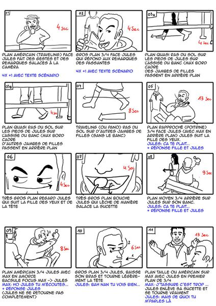
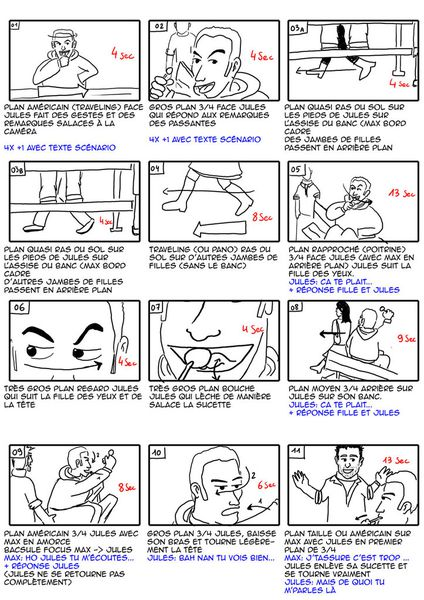

Voyager dans mes rêves
Pour ce projet, vous devrez partager le synopsis, moodboard, scénarimage et la création des médias (P2.1). Suite à quoi, vous allez vous séparer et continuer le projet seul pour toute la partie animation et programmation.
Le synopsis est un résumé du scénario, qui décrit les grandes lignes de l'histoire et qui permet de se faire une idée globale du thème et de l'évolution de l’histoire et des personnages. Il doit se borner à esquisser les principaux personnages et le déroulement dramatique, sans entrer dans les détails et ne doit comporter ni explications, ni dialogues.
Il doit être rédigé au présent de l’indicatif, dans un style simple, souvent indirect.
Exemple de synopsis :
Juliette (30 ans) est assise dans une salle d’attente. Une mouche tourne autour d’elle, entre dans son oreille, se pose sur sa bouche… Une guerre s’amorce entre la mouche et Juliette. Juliette finit par se débarrasser de la mouche en l’emprisonnant dans sa main.
En utilisant le gabarit Figma suivant, créez votre moodboard : gabarit_moodboard_figma_optiweb.fig (lien vers le fichier dans notre wiki de classe, cours 7).
Palette de couleur harmonieuse. Utilisez coolors.co.
Utilisez le logiciel Storyboarder pour réaliser votre scénarimage. Voir ma capsule vidéo qui montre comment utiliser ce logiciel gratuit.
Format d'exportation pour la remise
Vous devez exporter votre storyboard en PDF: 4 case par page, 2 rangées, 2 colonnes.
Spécifications
Histoire entre 6 et 8 chapitres
Concrètement, chaque chapitre représentera une section dans la page, chaque section, une en dessous de l’autre. Chaque case du scénarimage sera en format 16/9 (format écran standard) et démontrera ce qu’on voit à l’écran pour chaque chapitre.
Chaque chapitre peut comporter plusieurs plans afin qu’on visualise bien les animations à l’intérieur de celle-ci. Donc dans votre scénarimage, il est possible d’avoir plusieurs cases pour illustrer le même chapitre.
Dans la description de chaque case :
- Numéro du chapitre (Chapitre 1, Chapitre 2)
- Expliquer ce qu’on voit dans ce plan (soyez bref)
- Expliquer l’animation qu’il y aura dans ce plan (soyez bref)
Les croquis de votre scénario doivent être clairs et de bonne qualité. Pas de barbouillage incompréhensible.
Voici 2 exemples :
 

Source: http://cine-5eme.over-blog.com/story-board.html
Types d’animations obligatoires à prévoir dans votre scénario
- Prévoir la transition entre chaque chapitre, au moins 3 transitions différentes.
- Défiler (scroller) dans un paysage à plusieurs couches avec effet parallax (le fond bouge moins vite que les éléments plus près).
- Morphing entre 2 formes simples (2 éléments svg).
- Un élément qui suit une trajectoire non linéaire (une trajectoire en bezier, par exemple l’élément pourrait suivre un tracé en forme ce cœur ❤️).
- Animation de texte à prévoir (entrée et/ou sortie de titres et/ou paragraphes à l’écran).
- Quelque chose qui se compose ou se décompose en couche ou en éclats via le défilement de la page.
- Forme (ligne) simple qui de dessine à mesure qu’on défile (scroll).
- Au moins un chapitre avec animation automatique en boucle, qui s’active sans qu’on ait besoin de défiler (scroller).
Exemples pour chaque type d'animation
- Prévoir la transition entre chaque chapitre, au moins 3 transitions différentes.
- Défiler (scroller) dans un paysage à plusieurs couches avec effet parallax (le fond bouge moins vite que les éléments plus près).
- Morphing entre 2 formes simples (2 éléments svg).
- Un élément qui suit une trajectoire non linéaire (une trajectoire en bezier, par exemple l’élément pourrait suivre un tracé en forme ce cœur ❤️).
- Animation de texte à prévoir (entrée et/ou sortie de titres et/ou paragraphes à l’écran).
- Quelque chose qui se compose ou se décompose en couche ou en éclats via le défilement de la page.
- Forme (ligne) simple qui de dessine à mesure qu’on défile (scroll).
- Au moins un chapitre avec animation automatique en boucle, qui s’active sans qu’on ait besoin de défiler (scroller)
.